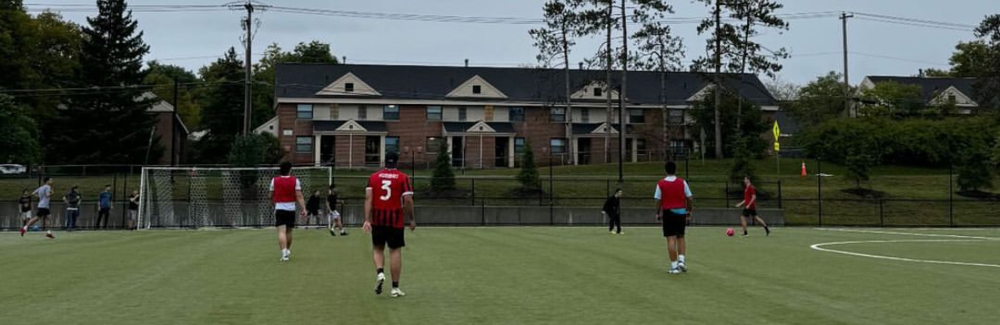
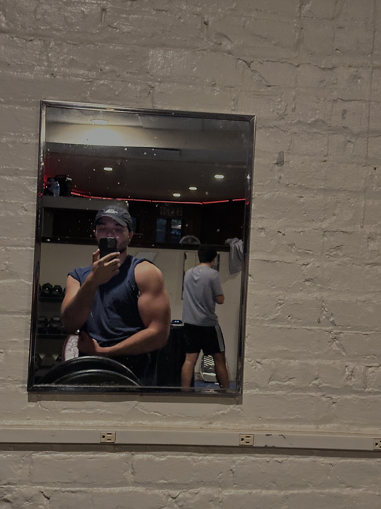
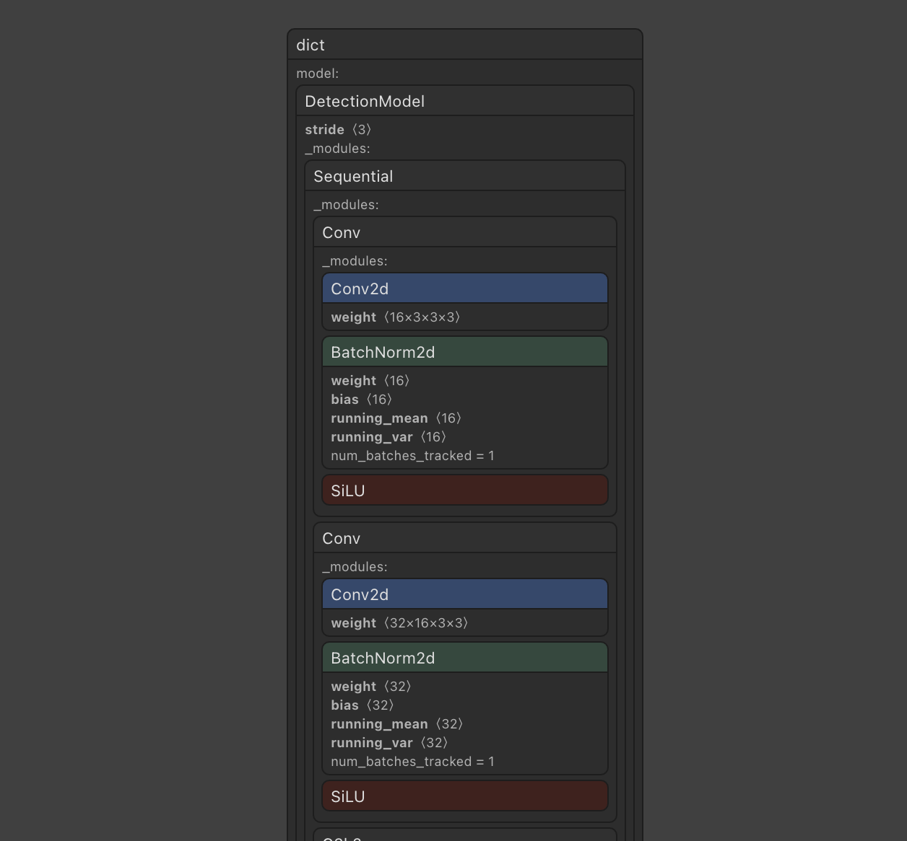
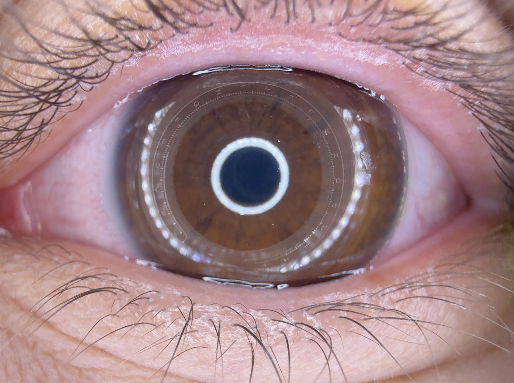
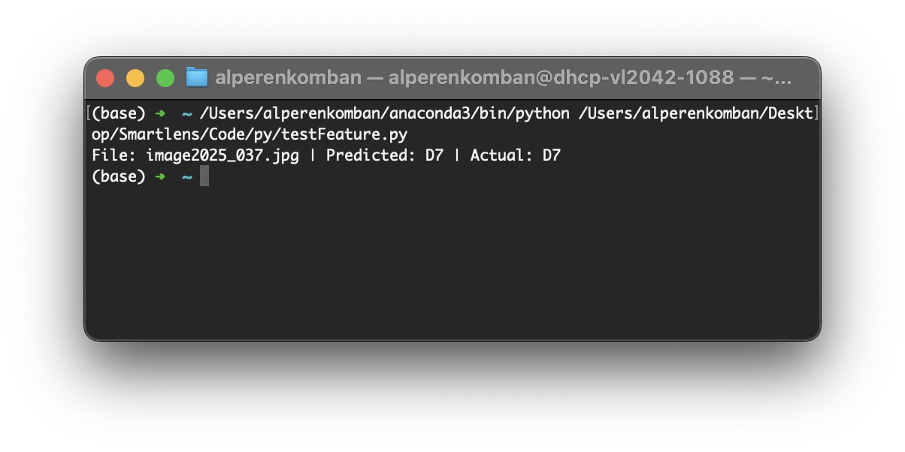

INTRODUCTION
I'm a Computer Science major at Cornell University with a solid foundation in Machine Learning and Operations Research, where I've gained deep knowledge into algorithm design, machine learning and optimization. I'm passionate about applying these advanced algorithms to solve challenging real-world problems.
BEYOND THE CODE
When I'm not coding or working on ML projects, I spend my time captaining my soccer team and playing with friends, staying active at the gym, or exploring the outdoors through and driving to recharge .



EXPERIENCE
Smartlens Inc.
Machine Learning Intern & Engineer
May, 2024 - Present | Mountain View, CA
-
I built multiple neural network models to analyze the smart contact lens,
identifying the optimal frame from video data with correct focus and alignment.
These frames are then analyzed using a segmentation algorithm I developed,
which extracts key components. Additionally, I engineered features to create
a regressor that evaluates their level with an accuracy of ±1.
Arizona State University
Teacher Assistant & Grader
Jan, 2023 - May 2023 | Tempe, AZ
-
I mentored over 600 students, facilitating their understanding of
object-oriented programming and data structures. My responsibilities
included conducting weekly study sessions, grading assignments for
200 students, and providing constructive feedback to enhance their
learning. I also collaborated with the lead instructor and contributed
to course delivery, which deepened my understanding and led to
several undergraduate research opportunities.
Silicon Valley Ignite Inc.
Marketing Intern
Jun, 2019 - Sep, 2019 | Sunnyvale, CA
-
I gained hands-on experience in online marketing and collaborated with teams
to enhance brand visibility. I attended SBA workshops, deepening my
understanding of startup ecosystems, and observed various startups to
learn about their culture and business models.
RECENT PROJECTS AT WORK
Neural Network Framework
-
During my internship at Smartlens, followed by the part-time role I was offered, I worked on several
solo projects that enabled me to bridge the gap between theory and practice. These projects have allowed
me to refine and master the skills I have acquired in school by applying them to real-world challenges,
gaining valuable hands-on experience along the way.

Classification
-
One of the first models I created was a classification model using YOLO v8, which I later updated to
YOLO v11. The goal was to determine whether a video frame is well-aligned, focused, and suitable for
analysis. I built my own dataset using frames extracted from videos. This process allowed me to gain a
deeper understanding of the data preparation pipeline required for building robust classification
models.

Segmentation
-
In a later project, I developed a segmentation model to locate key components within video frames and
assess their alignment accuracy. I utilized Darwin v7 for dataset preparation and YOLO v8 for
segmentation. Using the extracted coordinates, I implemented an XGBoost algorithm to analyze the
alignment quality of the frames based on the components' positions. This approach combined precise
segmentation with machine learning to evaluate frame suitability effectively.
Regressor
-
In my most recent project, I developed a regression model to assess contact lens levels and determine
current eye pressure. I utilized a feature extractor to derive meaningful features from preprocessed
video frames and built a regressor on top of these features. The dataset was prepared using frames I had
previously curated, ensuring high-quality inputs for training the model. This approach enabled accurate
predictions by combining feature extraction with regression analysis.

